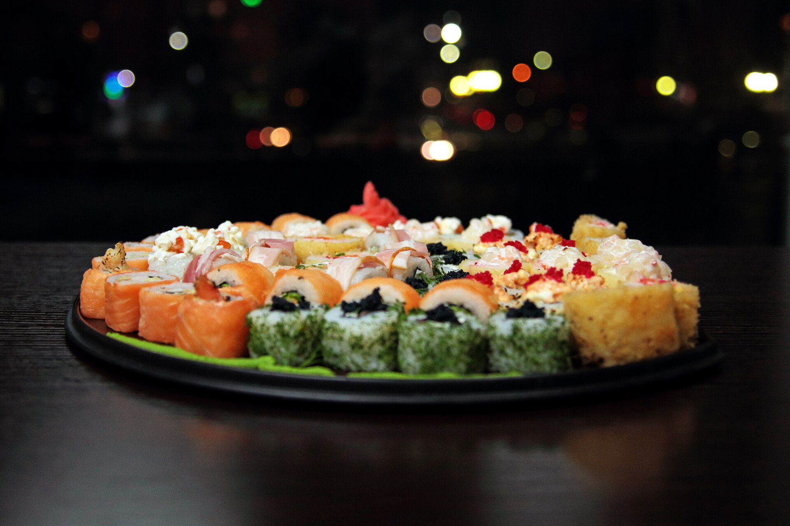

Adulto
Rodízio de sushi e frutos do mar, no jantar, de segunda a sábado.
[CONFIRMAR: valor]
Rodízio de sushi e frutos do mar no Atiradores, em Joinville. Jantar de segunda a sábado, até as 23h.
Segunda a sábado, das 18h às 23h.

Foto ilustrativa.
Segunda a sábado, das 18h às 23h.
Domingo: fechado.
Você reserva pelo WhatsApp, chega e aproveita. São três passos.
Escolha data, horário e número de pessoas no formulário. A mensagem abre pronta no WhatsApp: envie e aguarde a confirmação da casa. [CONFIRMAR: política de reserva e tolerância de atraso]
R. Visconde de Taunay, 1174, no Atiradores. A casa abre às 18h, de segunda a sábado. [CONFIRMAR: estacionamento e acessibilidade]
Sushi e frutos do mar em rodízio, no seu ritmo, de segunda a sábado. [CONFIRMAR: como o rodízio é servido, tempo de mesa e regra de desperdício]
Rodízio de sushi e frutos do mar, no jantar, de segunda a sábado.
[CONFIRMAR: valor]
Para os pequenos que vêm junto com a família.
[CONFIRMAR: valor e faixa de idade]
As categorias abaixo aguardam a lista oficial da casa. Nenhum item será publicado sem validação.
[CONFIRMAR: itens]
[CONFIRMAR: itens]
[CONFIRMAR: itens]
[CONFIRMAR: itens]
[CONFIRMAR: itens]
[CONFIRMAR: itens]
[CONFIRMAR: itens]
Prefere pedir em casa? O delivery tem cardápio próprio, em outra plataforma. Cardápio delivery (abre em nova aba)
Sua mesa
no dia que você escolher a partir das 18h
Preencha os dados e toque em enviar. O WhatsApp abre com a mensagem pronta: é só mandar. A mesa fica garantida quando a casa responder confirmando.
[CONFIRMAR: o número (47) 99220-1210 é o WhatsApp de reservas?]
Números públicos consultados em .
Ambiente bonito e aconchegante, daqueles em que a conversa rende e ninguém olha o relógio.
O frescor do peixe é o elogio que mais se repete nas avaliações públicas da casa, do sushi aos frutos do mar.
Garçons atenciosos, que acompanham a mesa do começo ao fim da noite.
Aniversário, encontro ou jantar em família: avise na reserva qual é a ocasião. [CONFIRMAR: o que a casa oferece para aniversários e grupos]
[CONFIRMAR: história da casa, ano de abertura e nome dos responsáveis]
[CONFIRMAR: inserir 3 depoimentos reais e autorizados por escrito]
Enquanto isso, as avaliações públicas estão no perfil da casa no Google.
TEXTO DO DEPOIMENTO
NOME · ORIGEM (ex.: avaliação no Google, mês/ano)
Foto ilustrativa: niguiri de salmão.
Toque na imagem para ver a próxima.
As fotos desta página são ilustrativas. As fotos do salão e dos pratos da casa entram aqui.
[CONFIRMAR: enviar fotos próprias e autorizadas da casa]
Recomendamos, principalmente nos horários de pico. A reserva é feita pelo formulário desta página, que abre o WhatsApp com a mensagem pronta.
[CONFIRMAR: política de reserva e tolerância de atraso]
[CONFIRMAR: valores por pessoa, por dia da semana e o que é cobrado à parte]
[CONFIRMAR: valor e faixa de idade para crianças]
Conte a ocasião e o tamanho do grupo no campo de observações da reserva.
[CONFIRMAR: condições para aniversários, grupos e eventos]
Avise na reserva para a equipe se preparar.
[CONFIRMAR: opções sem peixe cru, vegetarianas e cuidados com alergias]
[CONFIRMAR: tempo de mesa e regra de desperdício]
[CONFIRMAR: estacionamento próprio, conveniado ou na rua]
[CONFIRMAR: formas de pagamento]
Segunda a sábado, das 18h às 23h, no Atiradores.
Reservar pelo WhatsApp